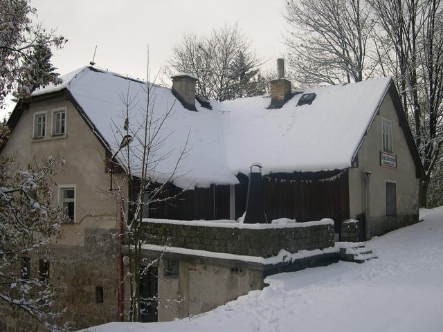
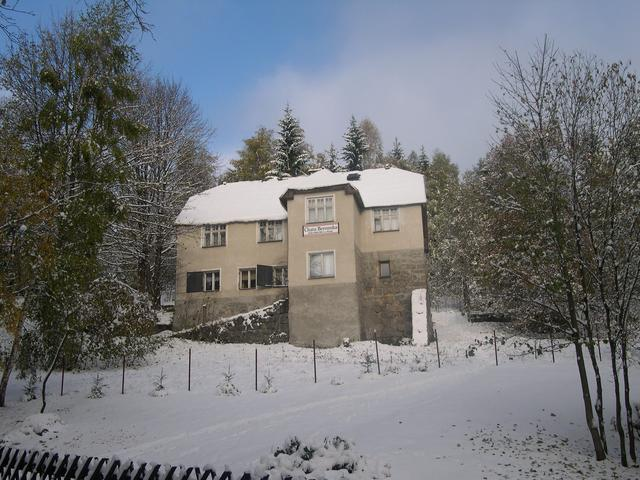
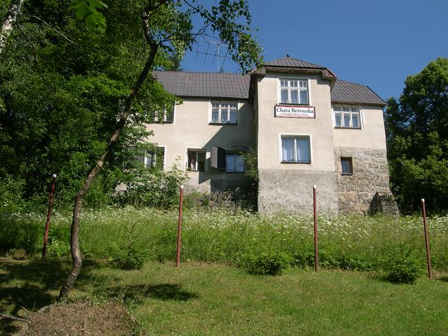
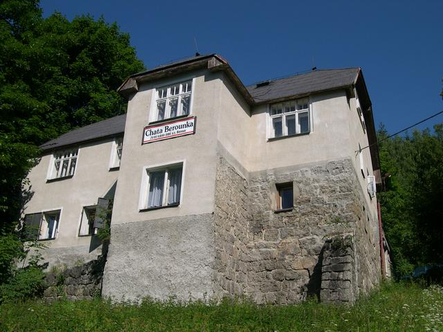

Janov nad Nisou
S možností ubytování cizích rekreantů. V klidném místě je zařízení vhodné pro rodinnou rekreaci, rodinné oslavy, cyklistické party, apaluchy, sportovní soustředění, školy v přírodě, lyžařské výcviky a jiné.



30 lůžek v osmi pokojích, vybavení chaty a fotografie interiéru.
Zobrazit →Vzdálenosti ke skiareálům, příjezdová mapa a GPS.
Zobrazit →Tři skiareály, 115 km upravených stop a program na špatné počasí.
Zobrazit →Turistika, cyklo, koupání a večery u ohniště.
Zobrazit →Ceny za noc pro členy svazu i ostatní rekreanty a kontakt.
Zobrazit →